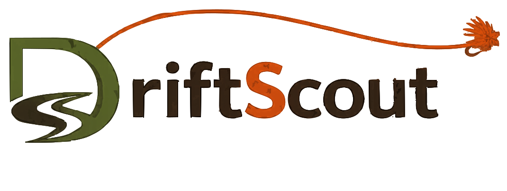

Upper Yakima
🎣 Easton Dam → Thorpe, WA · Fishing Dashboard
⭐ My Waters
Tap "Save This Water" on any river to pin it here for quick access.
Search Any US River — Live USGS Gauge Data Nationwide
River Flow
000cfs
—
Gauge Height
0.00ft
Loading…
Water Temp
--°F
Loading…
Air Temp
--°F
Loading…
Barometric Pressure
--inHg
Loading…
Fishability Score
LIVE CONDITIONS
—
/100
Loading conditions…
Recommended Setups
AI · Live Conditions
asking Claude…
48hr Flow History
River Flow — 7-Day History + Trend
USGS real-time
7-Day Fishing Forecast
Current & Upcoming Hatches — Upper River
📋 AI Fishing Insights
Claude · Powered
Generating conditions report…
Access Points — Easton to Thorpe
⚖️ Selective Gear Rules — Year-Round:
Single, barbless hooks only (crimp or file your barbs). Maximum 3 flies. All trout must be released. No bait. This stretch is part of Washington's Blue Ribbon fishery. Always verify current WDFW regulations before fishing — rules can change.
WDFW Regs ↗
Essential Fly Fishing Knots
Click any knot to watch the full tying tutorial · Video guides from Animated Knots
Trip Log & Fly Box
What worked, where, when — saved locally in your browser
Washington Fishing Regulations
Quick reference — always verify with WDFW before fishing
⚠️ Important: This is a quick reference only. Regulations change annually. Always check the current WDFW Fishing Regulations before fishing. Tribal waters have separate rules.
Tippet & Leader Calculator
Match tippet to fly size · Build the right leader formula
Tippet Size → Fly Size Chart
| Tippet | Diameter | Breaking | Fly Size | Best For |
|---|---|---|---|---|
| 0X | .011" | 15.5 lb | #2–6 | Streamers, heavy nymphs |
| 1X | .010" | 13.5 lb | #4–8 | Big dries, buggers |
| 2X | .009" | 11.5 lb | #6–10 | Hoppers, large nymphs |
| 3X | .008" | 8.5 lb | #10–14 | Hares ears, elk hair |
| 4X | .007" | 6 lb | #14–18 | BWO, PMD, most dries |
| 5X | .006" | 4.75 lb | #16–20 | Small dries, most nymphs |
| 6X | .005" | 3.5 lb | #18–24 | Midges, tiny dries |
| 7X | .004" | 2.5 lb | #22–28 | Micro-midges, spring creeks |
Leader Formula Builder
Fly Size Converter
Weight Converter
Indicator Depth Calculator
Washington Fly Shops
Local shops near the rivers you fish — best sources for current intel
Know a shop we're missing? Support local shops — they keep these rivers fishing.
Match the Hatch
Photo-identify any aquatic insect · Get exact fly pattern matches
📷
Drop a bug photo here
or click to browse · JPG, PNG, HEIC
Choose Photo
Photo Tips for Best Results
01Place bug on a light surface (rock, paper)
02Get close — wings, body, and tails visible
03Natural light works best, avoid flash
04Include something for scale if possible
River Map
Explore water, access points & public land · Powered by OpenStreetMap
USGS Gauge
Access Point
Your Location
Public / BLM Land
Public land boundaries are approximate — always verify before accessing
Stillwater Dashboard
Lake fly fishing — conditions, rigs & access nationwide
Select State
Surface Temp
--°F
Loading…
Air Temp
--°F
Loading…
Wind
--mph
Loading…
Barometric
--inHg
Loading…
AI Stillwater Rig Recommendations
AI · Live Conditions
Select a lake to get rig recommendations…
7-Day Fishing Forecast
📋 AI Lake Fishing Insights
Claude · Powered
Select a lake to generate report…
Access & Info
Select a lake to view regulations.